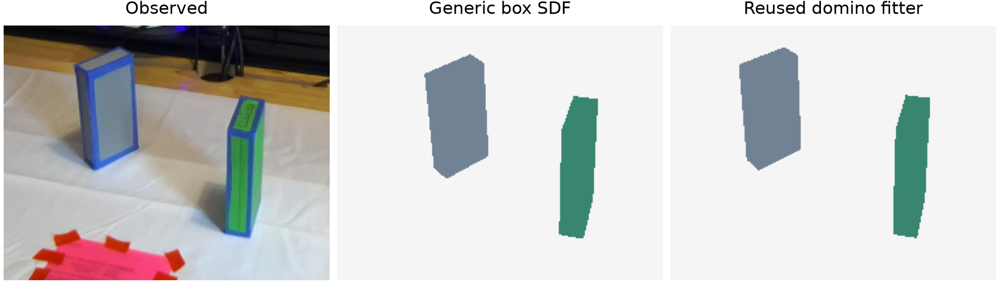
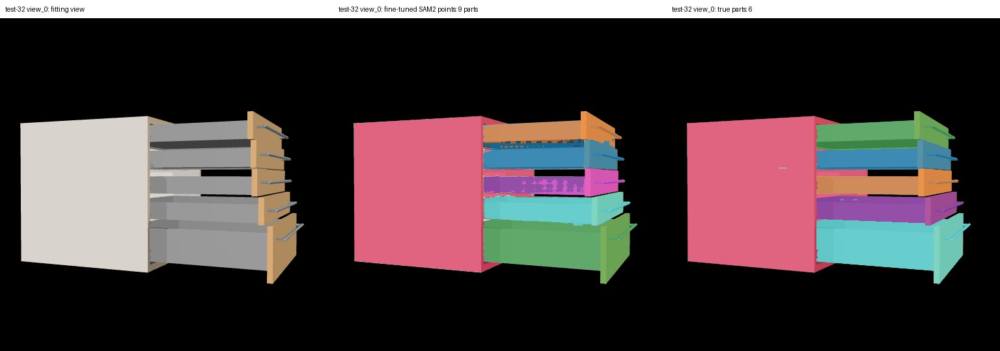
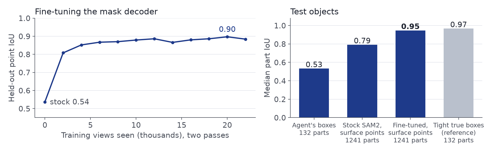

Reconstruction: the setup
Recover the poses of two known dominoes from one saved tabletop observation.
Saved left-camera view, 960 by 540 pixels
Scene: two rigid dominoes on a table. Reconstruct only these objects.Observation: RGB, aligned 3D points from FoundationStereo, and saved object masks.Human input: one pixel per domino and a clear rectangular patch of the table.Frame: fit using the table plane, then express both poses in the camera frame.
This is an offline reconstruction of a static capture. A robot controller is not running.
Source bundle exp_20260917_141030/look_01/bundle/30264679. The capture metadata identifies FoundationStereo as the XYZ source and supplies K_scaled. The selected pixels are grey (400, 340) and green (505, 390); the smallest saved masks containing them are indices 22 and 2. The clear table region is [540, 390, 680, 470]. Its measured plane RMS is 0.30 mm. The script reads saved fastsam_masks.npz and does not run segmentation again; that filename alone does not establish whether SAM2 refinement was used upstream. This run uses no camera-to-robot extrinsic transform. The recent robot-camera recalibration is therefore not applied here. Original image checksum and camera records are in sources/world-models/reconstruction-figure-inputs.json.
Reconstruction: the workflow
Select the objects. Choose each saved mask from its clicked pixel. Reuse the archived segmentation and depth.Prepare the 3D points. Measure a table-aligned frame from the clear patch. Erode object-mask boundaries and filter invalid or distant depth points.Fit known domino geometry. Try several initial poses and minimize distance to the box surface. Constrain the bottom to touch the table.Resolve the visible side. Compare thickness-shifted alternatives against the surrounding 3D cloud to choose which side of the observed face the box occupies.Export and check. Transform poses back to the camera frame, generate RoboTL, compile to MuJoCo, and compare the rendered view with the observation.
SDF means signed distance to the box surface. The fitting constraint does not weld the exported bodies to the table.
Inspect the fitting pipeline
Canonical owners are BabyRobot markerless.domino_fit.mask_to_base_points, fit_domino_pose and scene.fit_dominoes.resolve_side. Mask erosion is two pixels; foreground filtering keeps camera-depth points within 0.10 m of the fifth percentile, with at most 4000 points. Contact fitting optimizes x, y and two constrained orientation angles, deriving vertical position from known geometry and table height. resolve_side compares candidates shifted by plus or minus one thickness along the box normal and requires improved full-cloud support. The runner snapshot is from commit ef07da9; canonical function source hashes are recorded in the code download. This is numerical fitting and deterministic program export, not LLM program synthesis or MPC.
Reusing the domino fitter

Training view Generic box SDF Reused domino fitter
Depth RMSE 24.2 mm 4.8 mm Mask IoU 0.713 0.678 Depth coverage 96.0% 91.6%
Same RGB, depth and masks; the reused fitter also receives a clear table patch. Depth improves, silhouette overlap decreases. No held-out or control validation.
Both boxes remain free bodies. Table contact guides fitting; assert_transform initializes their poses.
Inspect new scene.py
Inspect baseline
New program and fit · Baseline program · Comparison measurements · Implementation PR
Archived BabyRobotPredicator capture exp_20260917_141030, look_01, camera 30264679. All panels use the same camera-local frame and crop; RGB, depth and selected mask hashes match across runs. Only the two dominoes are reconstructed. The generic SDF fit put 98% of the grey domino's selected points on a rear-facing box surface: surface residual 0.56 mm, median first-visible-surface error 40.7 mm toward the camera. The replacement calls BabyRobot mask_to_base_points, fit_domino_pose and resolve_side, retaining mask erosion, foreground depth filtering, contact-constrained fitting and full-cloud side resolution. The manually supplied table rectangle is [540, 390, 680, 470], with a measured plane RMS of 0.30 mm. That frame comes from this capture's depth, not a new camera-to-robot calibration. Nominal dimensions are 150 by 70 by 29 mm, mass 50 g, friction 0.5; these are supplied priors. Table contact is a reconstruction assumption, not a simulated joint. RoboTL adds a free joint to each box; the Weld anchors only the empty scene frame. The new program SHA-256 is 8a62c111f6eee620069b4ead3ee9710dc9f79d287843cee2d90d601fd6ff8d66. The displayed programs are exact saved outputs, not LLM-synthesized assemblies. The implementation passed 37 tests on polly, including synthetic single-face and multi-face export checks. This is a training-view comparison with additional table evidence; table dynamics and control transfer remain unvalidated.
LLM reconstruction: the setup
An LLM agent writes the RoboTL program of an articulated object, its parts and joints, from RGB-D views.
Benchmark: 37 PartNet-Mobility objects in Real2Code's part-count bins. Real2Code did not release its test set, so we render one to its protocol.Input: nine RGB-D views of one articulation state, with cameras. Either no masks, part masks from our fine-tuned SAM2, or the ground-truth part masks.Agent: effectful, with a Python REPL and image tools. Every scene it writes is compiled and scored on silhouette and depth.Budget: 8 scenes and 30 minutes per object. The host picks the best scene on three held-out views.Metrics: Real2Code's own Chamfer distance and joint errors, run from their code.
Real2Code's Drive folder for its synthetic set is empty, so robotl-reconstruction renders 37 test objects from UMPNet's PartNet-Mobility URDFs following their blender_render.py: 12 views of 512 by 512 RGB-D from their front arc at 4 m, hinges in the top 60% of their range, drawers opened at least 80%, MuJoCo rendering with mean texture colors. Their Table 2 bins are 15, 9, 6 and 7 objects; the paper's text says 35 but the bins sum to 37. Real2Code also uses depth: its part_segmentation/sam_to_pcd.py lifts SAM masks to point clouds with rendered depth, and its real objects come from a LiDAR iPhone. Nine views are for fitting and three are held out for selection. Without masks the silhouette comes from valid depth and the agent may call SAM2 itself. Joints are compared in world frame; parts are paired by least total Chamfer distance. Renders carry each part's mean texture color; the first runs rendered 35 of the 37 objects flat gray because trimesh refused the textures' relative paths, and later runs use the fixed renders. Validation views, ground truth and the source dataset stayed off each search machine until every search had ended, and a trace audit found no access to them.
Part masks from surface points

We fine-tuned SAM2 on 12.6k rendered views of 289 PartNet-Mobility training objects, following Real2Code.

Chart data · Chart script ·Segmentation PR
The training curve is held-out point IoU, measured every 2000 training views on one twentieth of the training objects kept out of training. A last check after both passes gives 0.90, the best score, so that decoder is the one used. SAM2 is prompted at 100 points drawn evenly from each fitting view's own surface, one point at a time. Prompts whose masks agree, mean IoU above 0.7 over the views they share, form one part, and each pixel goes to the smallest part that claims it. This is Real2Code's test-time scheme. Only the mask decoder was fine-tuned, with Real2Code's recipe of 16 point prompts per image and a BCE, Dice and IoU-head loss, on 12.6k views of 1396 articulation states of 289 PartNet-Mobility objects outside the development and test sets: two passes on rolly's RTX 4090, held-out point IoU 0.54 to 0.90. Median part IoU: SAM2 on the agent's own boxes 0.53; stock SAM2 at surface points 0.79; fine-tuned 0.95; tight boxes around the true parts 0.97. Each is the median IoU of each visible true part against its best predicted mask, over 1241 visible parts across the fitting views of all 37 test objects for the point prompts, and over the 132 visible parts in the 36 views where GPT-5.4 drew boxes for the box prompts. The fine-tuned segmenter over-splits, about 6.8 parts per object against about 3.6 true; this chest gets 9 parts for 6. The agent gets these masks as its segmented-masks condition.
LLM reconstruction: the film
Camera 4 of the five-drawer chest. Right: the same frames with each part's tracked mask.
Cameras: three of the nine fitting cameras, 48 frames each at 256 by 256.Motion: every joint moves at once, from the observed state to one stop, to the other and back, resting at each stop.Masks: our fine-tuned SAM2 tracks each part's mask from the first frame through the film.Evidence: at about a thousand pixels per camera and every frame, which part shows and how deep it is.
The film starts at the fitting views' state, so the first frame is one of the views the agent already fitted. The hand that moves the joints is not rendered: parts move as if pushed, and each rests against its stop for some frames, which is what pins a limit. The three cameras are view_0, view_4 and view_8 with the fitting views' poses. Tracking is the SAM2 video predictor on the first frame's part masks; across the 37 objects the tracks keep a median IoU of 0.92 against the true part masks at the first and last frames, 5% are lost by the end. The fit's likelihood, on 32 independent rays per frame, scores each pixel's part label and depth against the compiled scene posed at candidate joint positions, under a model where each joint follows a smoothly moving hand clipped to its limits, filtered exactly over a grid of hand positions and speeds.
LLM reconstruction: what the agent writes
self.door = Slab([0.02, 0.4, 0.4], [0.8, 0.3, 0.2, 1.0])
self.door_joint = connect(
self, self.door, Pose(pos=[-0.354, -0.061, 0.4], rv=[0.0, 0.0, 0.8])
)
self.drawer = Slab([0.36, 0.34, 0.12], [0.3, 0.5, 0.7, 1.0])
opening = choose(dist.TruncatedNormal(-0.15, 0.02, low=-0.3, high=0.0))
self.drawer_joint = connect(
self,
self.drawer,
Pose(pos=[opening, 0.0, 0.11]),
kinds={"slide": 0.8, "hinge": 0.1, "weld": 0.1},
axis=dist.ProjectedNormal(20.0 * jnp.array([-1.0, 0.0, 0.0])),
)
constrain(non_overlap(self.drawer, self.shelf))Excerpt of the example the agent reads. Full source: connect example Params example connect itself Download
choose:constrain:non_overlap keeps two parts clear.Params:range=(p.door_closed, p.door_open), for the film to fit.connect:No prompt text describes these. The agent reads their docstrings and the example in its REPL.
The code is the drawer and door of connected_cabinet_example in robotl-reconstruction (PR 12), the example the agent is pointed at. choose and constrain are RoboTL operations: solve_init samples every chosen value with NUTS and keeps the draw with the highest log density, the constraints entering as factors; a plain float is never moved. Params with Prior is the contract of PR 8: a frozen dataclass of limits the agent declares, read with parameters(Params), each a joint position with a prior wide enough for the film. connect(parent, child, pose, kinds, axis, pivot) is a marker operation: until a fit solves it the scene compiles with the connection welded at pose, so a connected scene scores as its welded twin; kinds is a probability per joint kind, axis a ProjectedNormal over directions in the parent's frame, pivot a Normal over points. The agent's module binds connect, choose, constrain and numpyro's distributions in its REPL scope, so its first cell can print their source; in the pilot it printed connect's and both cabinet examples'.
LLM reconstruction: what the solver does with connect
Track each part. Build the scene with every connection free, then align each part's surface to its tracked points in every frame.Read the motion. Each child's poses in its parent's frame, relative to the observed state.Propose three joints. A weld; a slide, its axis from the shifts; a hinge, its axis from the turns and its pivot from where the turns meet. Each with the best limits on a 16 by 16 grid.Choose by the film. The likelihood of every frame under each proposal, less a penalty per parameter, plus the agent's priors.Keep what the views prefer. The scene's own pose stays where the still views score it better; then fit the limits.Out: kind, axis, pivot, limits and both ports. 47 s per connection in the pilot.
Mechanism from PR 12 of robotl-reconstruction. The probe builds every connection as an unlimited slide so each part is its own MuJoCo link; alignment is point-to-plane ICP with trimming distances of 10, 5 and 2 cm, each frame starting from a constant-velocity prediction, with restarts around the observed pose. The motion is X = P_0^-1 T_0 and M_t = (P_t^-1 T_t) X^-1 in the parent's frame. The slide axis is the main direction of the shifts; the hinge axis is the main direction of the rotation vectors and its pivot solves (I - R_t)(c - o) = M_t o - o; both are MAP estimates under the call's priors. The choice is the exact hand filter's log marginal likelihood at the best of a 16 by 16 grid of limits, less a BIC penalty with n = frames times 32 rays, plus the log priors relative to the uninformative defaults; a weld reads the slide's table at position 0. Connections are chosen one at a time over two passes. The still-view check compares the fitting views' silhouette IoU and depth under the solved pose and the scene's own, connection by connection. The controlled check on the five-drawer chest, its joints replaced by connect at poses 3 cm and 10 degrees off, recovered five slides with axes within 0.62 degrees and limits within 6 mm in 661 s; the pilot's fit took 236 s because the agent's kind prior left only slides to score.
Reconstruction results
Masks Model Finished Shape error Joints found Joint type Axis position Successes
None GPT-5.4 36 116.1 65 of 95 0.82 0.58 0 Gemini 3.1 Pro 26 7.0 53 of 74 0.74 0.09 11 Segmented GPT-5.4 31 52.8 69 of 85 0.83 0.31 2 Gemini 3.1 Pro 20 6.8 33 of 47 0.75 0.06 9 GPT-6 Astra 36 0.23 99 of 99 0.97 0.01 31 GPT-6 Astra, MuJoCo XML 37 0.21 101 of 101 0.97 0.01 33 Gemini 4* 23 0.24 59 of 59 1.00 0.01 21 Gemini 4, MuJoCo XML* 19 0.26 67 of 67 0.95 0.00 17 True parts, first runs GPT-5.4 33 30.3 68 of 89 0.74 0.30 2 Gemini 3.1 Pro 18 10.6 48 of 48 1.00 0.01 8
Each row scores the objects that run finished, out of 37. Shape error is the median whole-object Chamfer distance, times 1000; a success finds every joint and no extra ones, with the right types, axes within 10° and pivots within 0.1, and shape error at most 10. The true-part rows are the first runs, on an earlier prompt and with 35 of 37 objects rendered gray. * Gemini 4's rows add one prompt line saying only evaluated scenes count; with the standard prompt it finished 6 objects, 5 of them successes.
GPT-6 Astra does as well writing MuJoCo XML directly, without RoboTL (33 successes against 31); Gemini 4 finishes fewer objects that way (19 against 23). Gemini 4 finished only 6 objects until one prompt line said only evaluated scenes count.
Generated code for the 11-drawer chest: GPT-6 Astra GPT-6 Astra, XML Gemini 4 Gemini 4, XML
Per-object results · Every selected program of the new runs · Implementation PR
The buttons open each new run's selected program for the 11-drawer chest, test-31, where all four find 11 of 11 joints with shape error 0.24 to 0.28; the XML programs are indented for display, and the bundle keeps every selected program exactly as written. Same protocol for every run: 8 scenes and 30 minutes per object, selection on three held-out views, Real2Code's chamfer_distance and compute_joint_error. Only the model, the masks, the representation and, for Gemini 4, one prompt line change. GPT-5.4 and GPT-6 Astra (gpt-6-astra) ran through OpenAI; Gemini 3.1 Pro (gemini-3.1-pro-preview) and Gemini 4 (gemini-4-argon) through Vertex AI's OpenAI-compatible endpoint, all at their default reasoning effort with 8192 completion tokens. Joint type and axis position are averaged per object over paired joints; axis position is in object units; joints found counts true joints that a prediction paired with. Medians cover each run's own finished objects, so successes out of 37 is the fairer comparison across rows. GPT-6 Astra evaluated about 8 scenes per object; an audit of its 1,820 REPL cells found no access outside each study's views and output, and its 9 subprocess calls compiled C++ ray-casters it wrote itself. Its RoboTL run lost test-15 at selection, when the chosen scene's door and drawer overlapped by 0.012. The MuJoCo XML run writes each scene as one MJCF document, with no RoboTL; on the 36 objects both GPT-6 runs finished, RoboTL has the lower shape error on 19 and XML on 17. The Gemini 4 row adds one prompt line saying only evaluated scenes count: with the standard prompt it scored its own scenes in the REPL for the whole 30 minutes and finished 6 objects, 5 of them successes. Gemini 4 writing MuJoCo XML, with the same prompt line, finished 19 objects, 17 of them successes; on the 12 objects both Gemini 4 versions finished, XML has the lower shape error on 4. One search per object and condition.
Successful reconstructions
Gemini, segmented masks: 4 of 4 joints, 3.8 Gemini, segmented masks: 6 of 6 joints, 6.7 Gemini, no masks: 5 of 5 joints, 1.7 GPT-5.4, segmented masks: 2 of 2 joints, 7.7
Every joint right, shape error at most 10, out of 37 with no masks, segmented masks, true parts: GPT-5.4 0, 2, 2; Gemini 11, 9, 8.
Play together Doors and drawer Six doors Five drawers Two doors
Test objects test-27, a tall cabinet with doors and a drawer; test-34, six doors; test-30, five drawers; test-18, two doors. Captions give joints found and shape error. A success means every true joint paired with a predicted joint of the right type and no extra predicted joints, axis direction within 10 degrees, pivot position within 0.1 where Real2Code defines one (hinges; slides have none), and whole-object shape error at most 10, near the one-box-per-mask baseline's median of 6.7. 20 of the 37 objects succeed in at least one run, 14 of them with two or three parts; these four have the most joints, plus GPT-5.4's best. The true-part counts come from the first runs, on the earlier prompt. Each clip is the ground-truth panel beside the run's panel, cropped from that object's six-run grid video; the reconstruction sweeps each joint 0.15 or 0.6 rad around its fitted value, since no program set limits. Validation IoU 0.94, 0.91, 0.97 and 0.86. All four programs are the exact selected scenes from the saved search records; the render provenance lists each clip's source.
An 11-drawer chest
Top: ground truth, GPT-5.4 with no masks, segmented masks, true parts. Bottom: observed view, Gemini 3.1 Pro.9 of 11 · 53.8, 0 of 11. Gemini: 1.2, 11 of 11 · no scene · 1.6, 11 of 11 GPT-5.4, no masks GPT-5.4, segmented GPT-5.4, true parts Gemini, no masks Gemini, true parts
All five programs · Grid renderer · Panel renderer · Render provenance
Test object test-31, PartNet-Mobility StorageFurniture/46172. Every panel uses the same camera; the ground truth sweeps each joint between its URDF limits, and each reconstruction sweeps its own joints around the fitted value, 0.15 for slides and 0.6 rad for hinges, since no program set limits. GPT-5.4 gave the drawers no joints without masks or with true parts (validation IoU 0.87 and 0.85); with segmented masks it wrote eight sliding drawers and one hinged door, which pair with 9 of the 11 true joints (0.75). Gemini found all 11 joints without masks (0.92) and with true parts (0.95); its segmented search ended on a provider error before any scene. All five programs are the exact selected scenes from the saved search records.
A table with drawers
Top: ground truth, GPT-5.4 with no masks, segmented masks, true parts. Bottom: observed view, Gemini 3.1 Pro.8 of 8 . Gemini: 33.6, 0 of 8 · 90.2, 0 of 8 · no scene GPT-5.4, no masks GPT-5.4, segmented GPT-5.4, true parts Gemini, no masks Gemini, segmented
All five programs · Grid renderer · Panel renderer · Render provenance
Test object test-33, PartNet-Mobility Table/22367. GPT-5.4 found 4 of the 8 joints without masks and with segmented masks, and all 8 with true parts, where its silhouette fit is poorest (validation IoU 0.32, 0.58 and 0.18). Gemini has the best silhouette fit without masks (validation IoU 0.71) but gave the table no joints there or with segmented masks (0.48); its true-part search ended when the type checker rejected its code. All five programs are the exact selected scenes from the saved search records.
All 37 objects
GPT-6 Astra and Gemini 4 GPT-5.4 and Gemini 3.1 Pro
Generated code: GPT-6 Astra GPT-6 Astra, XML Gemini 4 Gemini 4, XML
Generated code: GPT-5.4, no masks GPT-5.4, segmented GPT-5.4, true parts Gemini 3.1, no masks Gemini 3.1, segmented Gemini 3.1, true parts
All selected programs · Per-object results · Render provenance
All 37 test objects, one at a time. The newer-model grid shows GPT-6 Astra and Gemini 4 with segmented masks, each with RoboTL and writing MuJoCo XML directly; Gemini 4's runs carry the prompt line saying only evaluated scenes count. The older-model grid shows GPT-5.4 and Gemini 3.1 Pro with no masks, segmented masks and true parts, the true-part runs being the first runs on an earlier prompt and mostly gray renders. The caption gives each run's shape error and joints found, bold where the run is a success: every joint found and no extra ones, the right types, axes within 10 degrees and pivots within 0.1, and shape error at most 10. Reconstructions sweep their own joints between the limits they set, or 0.15 and 0.6 rad around the fitted value where they set none. The buttons open each run's selected program for the chosen object, the XML ones indented for display.
GPT-6 Astra, four attempts
Generated code: One state, RoboTL One state, XML Film, joints Film, connect Fit records: Film, joints Film, connect
One-state programs · Film programs and fit records · Per-object results · Strip composer · Film panel renderer · Panel renderer · Render provenance
All 37 test objects, segmented masks, the same observed state in every attempt; the film searches ran 15 on rolly and 22 on polly, split by object number. One state: the agent sees the fitting views only and writes the parts and joints, as RoboTL or as a MuJoCo XML document; those programs set no limits, so their panels sweep 0.15 around a drawer's fitted opening and 0.6 rad around a door's. Film, the agent's joints: the agent also sees the film, writes the joints itself and declares their limits as Params with priors, and the fit tracks the parts through the film with SAM2 and samples the limits. Film, connect: the agent writes connect(parent, child, pose), with priors where it has them, and the solver chooses each joint's kind, axis, pivot and limits from the film. Both film runs used the same code snapshot (robotl-reconstruction 05fe792, PR 12) and differ only in the agent's instructions; 2 or 3 workers per host, 45 minutes and 8 proposals per object. The caption gives each run's shape error and joints found, bold for a success: every joint found and no extra one, the right types, axes within 10 degrees and pivots within 0.1, and shape error at most 10; the film runs add the benchmark's mean range error over paired joints, 0 when the limits match. In ten objects of the connect run (test-10, 17, 20, 22, 23, 24, 27, 32, 34 and 36) selection picked a scene the agent had evaluated but never fitted, whose connections were still welds: no joints, a rigid video. Those ten selected scenes were fitted afterwards with the same solver, which is what evaluating them does under PR 13; eight succeed and are what the picker shows, and two (test-17, test-20) were refused because the film swings a door through the scene's own fixed base, so they stay welded. With those fits the connect run succeeds on 35 of 37 objects, 97 of 101 joints, mean range error 0.115 over paired joints. The XML panels are dark because the agents' documents have no skybox. Film panels start at the closed end of each solved range. The buttons open each run's selected program for the chosen object, the XML ones indented for display, and the fit record a film panel is built with: posterior parameters, limits, solved connections and, where the snapshot recorded them, the film scores.
VoxPoser and Guided MPC: settings in these runs
Same compiled stock-hand scenes, MuJoCo 3.15 and libccd, 2.5 ms physics steps
Setting VoxPoser + initial LEAP adapter Guided MPC reference
Hand control Hand pose + scalar open/close; fixed finger posture closes selected joints to 1.2 rad 7 arm + 16 finger targets; grasp, squeeze, lift and regrasp proposals Planning Generated spatial maps on a 100³ grid; Cartesian IK, no MuJoCo grasp rollouts 32 candidate sequences, each predicting 4 s of native MuJoCo dynamics Feedback One planning pass per move; object geometry reobserved between waypoints Replan every 0.25 s (4 Hz) from the current state Contact forces Used by the outcome checker; not supplied to the generated planning code Used in contact/support losses and the outcome checker Physical checks Checks executed states for hold acceptance; no rollout feasibility screening Screens candidates for motion limits and penetration; allows recorded recovery fallbacks Trial setup GPT-4.1, temperature 0, seed 0; one generated program per object Saved per-object controller, seed 1; no LLM during execution
The fixed closure is an adapter restriction, not a demonstrated limit of VoxPoser. These differences prevent a controlled method ranking. The mustard reference is a fixed servo trajectory, not Guided MPC.
Acceptance and stopping rules · Verified settings and source evidence
What is shared, and what is not yet matched
Setting Shared Remaining difference
Physical scene Identical scene hashes: geometry, masses, actuators and initial fixture Controllers expose different actions and observations; Python/JAX versions also differ Final acceptance 5 s supported hold; whole-object clearance ≥3 cm, motion/contact conditions and physical limits VoxPoser's instruction requests 6 cm; it is scored by the same 3 cm native predicate Orientation Apple: any; screwdriver: tip-down; hammer: head-up; mustard: upright Guided MPC also requires intermediate tool-stage holds; VoxPoser checks the final pose directly Time ceilings Apple 40 s; screwdriver 150 s; hammer 210 s; mustard 40 s VoxPoser stops on code error or after the program plus 5.1 s of hold time. References can use the full ceiling Current failures All outcomes retain the original acceptance checks VoxPoser hammer/mustard hit an undefined helper; the adapter also exceeds some physical limits
Recorded adapter limitations: collision-cloud exclusion requests were ignored, and failed IK solves could still execute. These affect both H0 and A/B. The saved runs establish implementation behavior, not a method ranking.
Settings audit · Reference selection · Executed adapter
Final native hold predicates also check support, contact stability, penetration and arm speed/acceleration/joint limits, with the existing short contact-lapse tolerance. The adapter calls NativeEpisode._record but not NativeEpisode.run, so sharing the checker does not mean sharing candidate rejection. Initial adapter maximum arm acceleration ratios are approximately 3.49 to 6.54; hammer maximum penetration is 6.88 mm against the normal 3 mm limit. Motion violations can prevent hold acceptance. The RolloutBudget object in the adapter supports native recording and clocks; it does not imply that VoxPoser ran one-second MPC. Time ceilings match, correcting the earlier description of different budgets: realized episode lengths differ because of termination rules and errors. No new finger-control result is claimed here.
Tasks: pick up, then actuate
Drill: press the trigger past its switch (2 mm), as far as possibleWrench: close the jaw one worm turn (3.5 mm), then reopen itScissors: open to 30°, then close to 5°Spray bottle: hold it upright and pull the trigger a third of its stroke, one spraySpring clamps: pick upEach goal held 5 s while the hand carries the tool
Both methods are judged by the same RoboTL objective, scripts/actuate_mpc.py on claude/articulated-tasks 32254ccb: the pickup hold (contained, at least 95% of the weight on the hand, at most 5% outside support, 3 cm whole clearance) plus each stage's joint goal, in order, each held 5 s. A part driven more than 1 mm or 2 degrees past a stop counts as broken, so a jammed trigger never reads as a press. The drill fixture uses 16 hulls per part so a finger can reach the trigger face, and starts with the button at a side.
Can the LEAP hand press the drill trigger?
Index push 5.79 N, switch needs 5.47 N, full travel 20 N
The pad reaches only the bottom of the trigger, 48 mm from its knuckle
Switch never stays closed; the drill turns 12° in the hand
Measurements · Grasp · RoboTL #744
Static check plus simulation, no learning. Each LEAP servo is capped at 0.28 N m, the XC330-M288 at the 0.55 A the LEAP API writes. Press capacity is a linear program over the index's torque box through the contact Jacobian: 5.79 N without friction, 7.81 N with full pad friction. The hold margin while pressing is 5.5, so holding is easy. The simulated press applies those torques directly to the index joints: the trigger peaks briefly, then the drill turns 10 to 12 degrees in the hand and the pad slides off; the switch is closed for none of the 2 s hold. Two fingers do not fit on the trigger. A co-designed hand would need the index 35 to 40 mm higher relative to the palm's top edge, or a palm-hinge lever of 34 mm or less.
VoxPoser on the articulated tools
14 trials on rolly, GPT-4.1, seed 0: no stage held
Tool A: fixed closure B: finger API available
Drill Pushed the drill along the table; its "press" step only moved the hand to the trigger · Code Crushed the drill into the table, then passed a string to execute · Code Wrench Read the thumbwheel's joint, then wrote targets into the returned dict; the crush drove the jaw to 7 mm · Code Arm IK rejected a pose 9.2° off · Code Scissors "scissors handle" matched both handles; error before motion · Code Same · Code Spray bottle Knocked the standing bottle over; arm IK rejected a pose 7.3° off · Code Same knock-over; IK rejected a pose 22° off before its joint-target and wait calls · Code Medium clamp Hand went down beside the clamp; finished without a hold · Code Same · Code Large clamp Arm IK rejected a pose 5.7° off · Code "large spring clamp handle" matched both handles · Code Extra-large clamp No grasp; ran out the 40 s budget · Code Same handle ambiguity · Code
Added: part names such as "power drill trigger", a reading of each part's joint, wait, and the in-order hold rule in the promptObserved: most plans grasp at one waypoint at the tool's centre, then move "3 cm above the table", which VoxPoser places over the table's centre
Round 2: adapter guided-mpc-baselines claude/voxposer-articulated 088965d on RoboTL claude/articulated-tasks 0d31aa8b, whose spray bottle stands on a flat base. Object nouns now match the instructions. Same native judge as Guided MPC. The joint reading is privileged state, disclosed in each trial's config; each trial has its own LLM cache. Arm IK accepts a pose within 1 cm and 5 degrees. Round 1 (13a303e on 32254ccb) also held nothing; the drill programs jammed the trigger by pressing the drill into the table. The wrench's jaw closing under a crush is a model limitation: its worm resists with a fixed friction torque, so more than about 26 N on the jaw backdrives it, where a real worm self-locks. Clips re-rendered with the scans' textures from the saved recordings; the runs are unchanged.
VoxPoser: fixed-closure trials
Play together from start Pause all
Round 2 fixed-closure trials, grasp view at real time, 480 by 360 at 24 fps, re-rendered with the scans' textures from each trial's saved recording. The finger-API trials' clips and the round 1 clips are in the same release; full recordings stay on rolly under voxposer-robotl/runs/articulated-20261102-r2.
Guided MPC, stock hand: no lift yet
Drill : pinched, never off the tableOutcome Wrench : fingertips on the tableOutcome Scissors : lifted 8.6 mm, slippedOutcome Spray bottle : never swung uprightOutcome Medium clamp : fingers close beside itOutcome Large clamp : held 6.3 mm up, all weight on the handOutcome Extra-large clamp : pushed and turnedOutcome
Play together from start Pause all
Inspect the objective
Four times speed, re-rendered with the scans' textures. Stock LEAP hand, seed 1, before the co-design study. Source at RoboTL 32254ccb .
RoboTL claude/articulated-tasks 32254ccb, scripts/actuate_mpc.py on polly: batch 32, 4 s horizon, 0.25 s replan, budgets 90 s drill and spray bottle, 120 s wrench and scissors, 40 s clamps. The pinch centres at the tool's centre-of-mass height, 8 to 20 mm on the flat tools, so the fingertips close on the table. The drill reached a hand share of 0.80 and the spray bottle 0.26. A diagnostic from a held scissors state started the opening stage, but the pinch squeezed the halves shut. Lift fixes (grip height, wrist pitch, standing start for the spray bottle) are in progress, then the LLM co-design study proposes the hand and these controls.
Co-designed hand: the large clamp lifted
The agent's design 2: ball tips on every digit, proposed from design 1's results
Lift accepted at 32.0 s, 62.7 mm up, held 5 s
The stock hand lifted none of the seven tools
Inspect the proposal Full proposal
Twice real speed. Native Guided MPC runner, one hand for all seven tools.
Co-design study on polly, 2026-11-02, gpt-5.6-sol proposing one LEAP hand plus per-tool grip controls for all seven articulated tools, scored by the native judge. Design 0 (stock) and design 1 (silicone hook tips) lifted nothing; design 1 carried the spray bottle 74 mm briefly. Design 2 changed every tip to a ball and the large clamp passed its lift hold. Design 3's clamp runs went numerically unstable and stopped the study. This is a designed hand, not the stock one.
LLM-written staged control
One tool at a time, stock hand: the LLM writes every stage as code, its objective, goal and constraints
Arm and hand each planned, sampled or held, per stage
Stages run on the existing staged controller and compose with Then, Choice, Fallback, Guard and Together
The native judge decides success, unchanged
Inspect a written plan Full plan
A WrittenStage plan leaf: objective, effect, maintain and support are synthesized RewardFn code over the scene's sensors, plus dwell, timeout, horizon and replan, and an arm mode and a hand mode (planned palm pose by IK, planned servo targets, sampled at a scale, or held). It compiles through the existing compile_operator into the library StagedController. Sampling one part at zero sigma on the other is the arm and hand split. The judge drives the native ActuatedGrasp checks over the episode's data, and a replay of a recorded native run gives the same accepted stages. Work in progress on RoboTL branch claude/staged-programs.
LLM-written control, stock hand: no lift yet
Spray bottle , plan 5: over the sprayer, neck descent timed outCode · Full plan Scissors , plan 1: approach done, grasp pressed them into the tableCode · Full plan Large clamp , plan 1: reach done, descent timed outCode · Full plan Large clamp , hand-written: pinch secured, lift refusedCode · Full plan
Play together from start Pause all
Real time. Drill, wrench and clamp studies are blocked on memory.
Per-tool studies on polly with gpt-5.6-sol writing up to 8 plans each, stock menagerie LEAP hand. The spray bottle's first two plans failed their reach; plans 3 to 5 fixed it and timed out descending to the neck. The drill and wrench attempts were blocked by evaluator bugs (a strict grasp-search IK tolerance on free-space reaches, a dropped initial grasp, reach timing past the arm limits), since fixed. The clamp and drill studies then exceeded polly's memory: each rollout returns all 10,191 sensor values for every step of the LLM's 1.5 to 4 s horizons; returning only the steps the losses read is the next fix. The hand-written clamp plan reaches, descends and pinches with an opposed grip in every variant, but no variant lifts: a firm grip presses the clamp into the table at 4 to 5 times its weight, a softer one does not hold it, and a sampled lift shears the grip open.
Individual finger control: the programs did not use it
Eight trials on rolly, no MPC. A and B share the quaternion repair and measured hand-state context
Object A: fixed closure B: finger API available
Apple 0 s 0 s / 0 calls Screwdriver 0 s 0 s / 0 calls Hammer 0 s 0 s / 0 calls Mustard bottle Parser error before physics Parser error before physics / 0 calls
Added: measured state for all 16 joints and a setter for individual joint targets. Native checks verified target persistence and open/close behavior.Observed: all four B programs kept using scalar gripper maps. We have not yet tested an executed independent-finger strategy generated by the LLM.
Inspect the added finger API
Implementation diff · Native checks · Outcomes and API-use counts · All A/B artifacts
Initial H0 recordings remain unchanged in the following sections. A repairs the quaternion helper and exposes measured hand state. B adds independent target selection for sixteen joints, preserving unspecified targets and carrying the selected closed posture through Cartesian motion. No posture example or new retry loop was added. All four B programs contain zero setter mentions and execute zero setter calls. Both groups also make zero additional get_hand_state queries, although their initial measured state is included in the prompt. Hammer and screwdriver A/B trajectories are identical; apple differs while still using scalar closure. Both mustard parsers return None and fail before physics. These findings do not show that independent finger control cannot work. Shared backend acceleration/penetration limitations remain.
Apple: fixed closure vs finger interface
Same scene, instruction, seed, shared observations and Cartesian backend; no MPC
Play together from start Pause all
Real-time playback. Offering the finger API did not cause its use in this trial. The original H0 result remains separate.
Original H0 comparison · Measured outcomes and API use · All A/B artifacts
Screwdriver: fixed closure vs finger interface
Same scene, instruction, seed, shared observations and Cartesian backend; no MPC
Play together from start Pause all
Real-time playback. Offering the finger API did not cause its use in this trial. The original H0 result remains separate.
Original H0 comparison · Measured outcomes and API use · All A/B artifacts
Hammer: fixed closure vs finger interface
Same scene, instruction, seed, shared observations and Cartesian backend; no MPC
Play together from start Pause all
Real-time playback. Offering the finger API did not cause its use in this trial. The original H0 result remains separate.
Original H0 comparison · Measured outcomes and API use · All A/B artifacts
Mustard bottle: fixed closure vs finger interface
Both generated object parsers fail before any physics step
Images show the initial scene, not an executed pickup. The saved single-frame recordings are retained in the artifact bundle. The original H0 result remains separate.
Original H0 comparison · Measured outcomes and API use · All A/B artifacts
VoxPoser on RoboTL pickup tasks
Initial Panda + LEAP integration: no accepted five-second hold in these four trials
Play together from start Pause all
All four ran in parallel on rolly. Presentation clips: 480 × 360 at 24 fps, real time; original recordings remain in the bundles. These trials test the initial adapter; they do not establish a method ranking.
All VoxPoser artifacts · Results · Generated programs · Saved maps
Native tasks from PR #674 through PR #713 revision ff60eaad16a044591e2a3119f6f499449869b8e7. Upstream VoxPoser GPT-4.1 planner, composer and spatial-map generators run through an external adapter using privileged object geometry, arm inverse kinematics and fixed binary LEAP closure. No Guided MPC proposals or losses are used by VoxPoser. Its final native five-second acceptance condition is evaluated directly; prescribed intermediate stage holds are omitted. Hammer runs for 14.5925 simulated seconds, screwdriver 20.5725, apple 18.0725 and mustard 8.4025. All longest_lifted_seconds values are zero. Errors are preserved as recorded. Comparison links pair these trials with existing seed-1 stock-current runs selected by identical scene.mjb hash, not by success. Videos stop at episode end and do not loop.
Apple: VoxPoser and Guided MPC
Lift and hold for five seconds. Identical compiled stock-hand scene, different controllers
Play together from start Pause all
Real time; each video stops when its episode ends. VoxPoser seed 0; reference seed 1. Time ceilings match; stopping rules and action interfaces differ.
Scene hashes, selection rule and comparison limits · VoxPoser wide view · Reference wide view
The reference was selected from the October 14 matched morphology study by identical compiled scene hash and seed 1. It was not chosen to maximize or minimize success. This is an illustrative comparison using existing runs, not a controlled performance benchmark: Python/JAX versions, controller seeds, action spaces, episode lengths and stage handling differ. Reference controllers and full native recordings are included in the per-object archive. All four selected references failed the final task. The apple reference reaches 4.3825 seconds of qualifying hold, below five seconds, and records 4.642 mm maximum penetration with one fallback tick.
Screwdriver: VoxPoser and Guided MPC
Lift and hold tip-down for five seconds. Identical compiled stock-hand scene, different controllers
Play together from start Pause all
Real time; each video stops when its episode ends. VoxPoser seed 0; reference seed 1. Time ceilings match; stopping rules and action interfaces differ. The reference also checks intermediate stage holds.
Scene hashes, selection rule and comparison limits · VoxPoser wide view · Reference wide view
The reference was selected from the October 14 matched morphology study by identical compiled scene hash and seed 1. It was not chosen to maximize or minimize success. This is an illustrative comparison using existing runs, not a controlled performance benchmark: Python/JAX versions, controller seeds, action spaces, episode lengths and stage handling differ. Reference controllers and full native recordings are included in the per-object archive. All four selected references failed the final task. The screwdriver reference records 61.51 seconds of contained hold, but zero qualifying tip-down hold; lifting alone does not complete this task.
Hammer: VoxPoser and Guided MPC
Lift and hold head-up for five seconds. Identical compiled stock-hand scene, different controllers
Play together from start Pause all
Real time; each video stops when its episode ends. VoxPoser seed 0; reference seed 1. Time ceilings match; stopping rules and action interfaces differ. The reference also checks intermediate stage holds.
Scene hashes, selection rule and comparison limits · VoxPoser wide view · Reference wide view
The reference was selected from the October 14 matched morphology study by identical compiled scene hash and seed 1. It was not chosen to maximize or minimize success. This is an illustrative comparison using existing runs, not a controlled performance benchmark: Python/JAX versions, controller seeds, action spaces, episode lengths and stage handling differ. Reference controllers and full native recordings are included in the per-object archive. All four selected references failed the final task.
Mustard bottle: VoxPoser and Fixed servo trajectory
Lift and hold upright for five seconds. Identical compiled stock-hand scene, different controllers
Play together from start Pause all
Real time; each video stops when its episode ends. VoxPoser seed 0; reference seed 1. Time ceilings match; stopping rules and action interfaces differ. The reference uses a fixed servo trajectory, not Guided MPC.
Scene hashes, selection rule and comparison limits · VoxPoser wide view · Reference wide view
The reference was selected from the October 14 matched morphology study by identical compiled scene hash and seed 1. It was not chosen to maximize or minimize success. This is an illustrative comparison using existing runs, not a controlled performance benchmark: Python/JAX versions, controller seeds, action spaces, episode lengths and stage handling differ. Reference controllers and full native recordings are included in the per-object archive. All four selected references failed the final task.
What VoxPoser generated for pickup
Exact planner outputs used by the recorded RoboTL trials
Screwdriver
View generated plan Hammer
View generated plan Mustard bottle
View generated plan
Generated code (full prompts in the bundles): Apple · Screwdriver · Hammer · Mustard bottle
Planner outputs reproduced verbatim with visual line wrapping. The generated instructions do not establish a successful physical grasp; execution outcomes are shown separately.
The rotation code failed
Hammer: the generated movement program calls this rotation-map block
Inspect failing rotation code
vec2quat is not defined in the execution environment. Hammer and mustard stop with a NameError.These runs expose a generated-code/API mismatch. They do not establish how a corrected integration would perform.
Recorded errors: Hammer · Mustard bottle
Programs are reproduced verbatim, with visual line wrapping only. The hammer and mustard errors are not repaired or filtered in these results. The screwdriver also generates vec2quat, but its rotation-only execute call is skipped by upstream behavior without an affordance map, so the undefined helper is not evaluated there. These observations identify integration and generated-code limitations; they do not isolate the cause of the unsuccessful apple or screwdriver grasps.
The saved grasp maps and paths
Blue: planned tool-centre path. Red: target voxel. Yellow: close-gripper region.Download numeric maps, generated code and native trajectories
The figure is plotted from each run's saved first-grasp numeric map set and planned path. These outputs specify where to move and close; they do not establish a successful grasp or an identified dynamics model. Full recordings, per-tick samples, action logs, source adapter and provenance are included in the VoxPoser bundle. A separate outcome file reports native acceptance.
VoxPoser: initial RLBench trials
Language-generated value maps guide a Panda arm with a parallel gripper. GPT-4.1, seed 0, CoppeliaSim
Success means reaching RLBench's task condition during execution. The lid trial reaches it, but does not retain it at the final state.
One trial per task. Guided MPC comparisons follow; observation and action interfaces differ.
Original recordings: 128 × 128 pixels. View generated programs Download all artifacts · Run details · VoxPoser code
These are initial trials of the released VoxPoser RLBench demo on rolly, not a reproduction of the paper's aggregate results or a comparison against the LEAP YCB tasks. The demo uses RLBench object masks. Its default config performs one outer planning pass; VoxPoser's separate object-pushing path uses sampling MPC. We retained upstream prompts, planner and controller, and used GPT-4.1 because the original GPT-4 endpoint rejected requests. Success is latched when an executed TaskEnvironment.step returns positive sparse reward. The saucepan trial reaches that condition before the instruction finishes; an earlier final-state-only check missed it. Both recordings are replays using cached LLM responses. Replay wall times were 13.94 seconds for saucepan and 9.81 seconds for button; these exclude initial LLM generation and are not comparable performance measurements. The videos show 278 and 236 native simulation steps at 20 Hz, respectively, at the original 128 by 128 recording resolution. The artifact bundle includes both videos, initial and final images, exact configs, normalized outcomes and a manifest with upstream revisions and video checksums. Normalized outcomes omit an unreliable observation variation field from the original runner output.
Saucepan lid: VoxPoser and Guided MPC
Left: VoxPoser reaches success, then releases the lid.Right: Guided MPC reaches success at 8.35 s and finishes holding the lid 14.95 cm higher.
One seed-0 episode per method. Guided MPC: 13.9 s of simulation, 26.2 min of computation.
VoxPoser generated code
Guided MPC objective and controller
Measured outcomes · Controller sources, settings and execution traces
Native TakeLidOffSaucepan variation 0, seed 0. Guided MPC succeeds from step 167 through 278; grasp begins at step 159. Final lid rise is 0.1494538188 m. These are recorded native outcomes, not a success-rate estimate. The original VoxPoser instruction also returns and releases the lid. Guided MPC explicitly rewards lifting and retaining it, so final retention reflects a difference in objectives. Original video is 128px; Guided MPC is 640px. Both sides replay simulated time, excluding planning pauses. Saved source commit e6a3c16. Historical gripper-memory aliasing affected six diagnostic prediction frames, not physical predictions, costs or executed outcomes; the archived report documents the correction.
RLBench comparison: what differs
Setting VoxPoser Guided MPC
Task Same Panda, parallel gripper, task models, CoppeliaSim and native success conditions. Guidance LLM-generated spatial maps and programs. Fixed task programs in these recordings; a separate LLM program search pilot follows. Observations Segmented point clouds. Object poses, grasp status and button-joint state. Control Cartesian paths and discrete gripper commands. Joint-target sequences evaluated in the native simulator; simultaneous arm/gripper control. Planning One outer planning pass in these runs. 1.6 s horizon, eight candidates, two rounds; replan every 0.4 simulated seconds.
Guided MPC completed both tasks in these trials, with privileged state and simulator access. This is not yet a matched method comparison or a real-time controller.
Full comparison report and saved controller programs · Implementation PR
Only one full-budget episode per task. Guided MPC costs improved over feasible seeds in 27/30 button replans and 17/35 saucepan replans; another 11 saucepan replans replaced an infeasible seed. No seed-only closed-loop ablation was run. Prediction uses fresh CoppeliaSim processes and replays each executed prefix; simulation pauses during planning. Both native model assets and initial images were checked, but original numeric initial states were not saved. The VoxPoser recorder omitted gripper-actuation callbacks, so its 278/236 recorded steps do not establish identical total interaction budgets. Guided MPC counts all executed physics steps. Original cached-program replay wall times exclude LLM generation and are not comparable end-to-end timing measurements. Neither Guided MPC run registered an arm collision. Native proximity-based gripper attachment remains enabled.
LLM program search: the first pilot
The LLM writes Python objectives, proposals and state; MPC executes them. Improvement can edit the reference; synthesis starts from a neutral hold.
Task Reference training Held-out: full cap Held-out: any step
Teal button 3/4 2/4 3/4 Saucepan lid 3/4 1/4 2/4
Improvement: both searches retained the reference. The button revision scored 2/4; the saucepan revision used only short probes.Synthesis: neither search produced a fully evaluated candidate. Both exhausted their eight case attempts on probes.
Full-cap success requires native success after the complete episode, without an execution failure. Both selected programs are the unchanged reference, so they share these held-out episodes.
Each search allows four programs and eight case attempts. The four searches used 1,152,676 charged simulator steps, including prediction and replay.
Inspect the actual programs
All outcome records · Report, programs and recordings · Implementation PR
Improvement receives the reference source; synthesis receives only a neutral hold scaffold. Each task/condition has four candidate slots, eight training case attempts, four hours and 800,000 simulator steps. Diagnostic probes and failures consume the allowance. Selection requires all four cases requested at the full task cap; declared planning failures count as unsuccessful, whereas partial or invalid evaluations cannot qualify. The planning-failure rule was clarified during integration after a standalone reference failure and after the first unchanged-reference submission, before revised-program and held-out outcomes. Both improvement selections have the same source hash as the fixed reference, so their held-out labels share four physical episodes per task, not independent replications. Native final success at the full cap is primary; transient success is separate. Both Guided MPC variants have privileged object/robot state and oracle native predictions. Native proximity attachment remains enabled. These results do not establish LLM improvement, world-model discovery or a matched advantage over VoxPoser.
Synthesis: no eligible program yet
The reference is withheld. These are actual generated programs evaluated in short diagnostic probes.
Teal button: 80-step probe
Saucepan lid: 120-step probe
Restart together Pause both
Both searches spent all eight case attempts on probes. Neither evaluated a program at the full task cap, so we report incomplete searches rather than a full-task success rate.
Button program
Saucepan program
Shown: button source c9e7e81f, reset 0 / sampling 101, requested 80 steps; saucepan source 92ebde77, reset 0 / sampling 101, requested 120 steps. The neutral scaffold supplies only a current-state hold proposal. Button used four 40-step and four 80-step attempts. Saucepan used two sets of four 120-step attempts; its second program had no feasible initial proposal in all four cases. Each search saved a third source after the attempt limit was exhausted, without evaluating it. No generated source was manually repaired or substituted with the reference. Short probes can inform revisions but cannot establish full-task failure or completion.
The generated plans
Actual GPT-4.1 outputs used in the two recordings
Saucepan: task condition reached during execution
View generated plan
Button: task condition not reached
View generated plan
Each composer(...) call generates another program that defines the motion.Saucepan · Button
Planner blocks reproduced verbatim from the execution logs, including the provided objects context. ANSI terminal formatting was removed. These cached programs were used in the recordings; the text was not reconstructed from their behavior. The saucepan program also returns above the pan and opens the gripper, so it does not specify a sustained hold away from the pan. Logs: Saucepan and Button .
The generated map code
For the lid grasp, the model defines a target voxel and a region where the gripper closes
Target: the lid's centre
Inspect target-map code
Gripper: open elsewhere, close within 1 cm of the lid
Inspect gripper-map code
Exact generated code. Positions here are voxel indices.All 16 saucepan code blocks · All 10 button code blocks · All artifacts
The affordance and gripper map generators are called by the composer for grasping the lid. These are programs for spatial maps, not learned object dynamics. The numeric map arrays were not saved in these trials; this slide displays the actual code that produced them. We have not rerun the trials or inferred a failure cause from the code alone. The button log includes an out-of-bounds target clamped to the grid boundary, which requires a separate diagnostic before attributing its failure.
Deformable cube in a fan
Let wind topple the light domino while the heavy domino stays upright, without touching either.
Open channels Rotated cube
Play together Pause both
30 mm tetrahedral lattice in MuJoCo. Scripted environment checks with synthetic airflow; flex-solver warnings remain unresolved.
Model source · Tetrahedral mesh · Recorded settings and outcomes
Saved demo_cube30_v4 joint_open and joint_closed recordings. Both use a bottom-vertex fixture; open means material +z points downstream and +y up, rotated means +x downstream and +z up. The scaled scene has a 7.285 g cube, 0.416 g light domino, 2.081 g heavy domino, 6.853 m/s prescribed peak fan speed, 2 ms steps and 3000 solver iterations. Mesh: 10,351 nodes and 27,991 tetrahedra. Young's modulus is a supplied 1 MPa. The quasi-steady airflow closure depends on current lattice geometry, applies forces through MuJoCo, and has not been calibrated to hardware or CFD. These runs do not include LLM model discovery or MPC optimization. Videos are saved-qpos replays at 15 fps, 960 × 540; bodies run in real time, airflow tracers and fan rotation are slowed 20× for visibility. The four views are overview, top, lattice close-up and rear. The original logs report flex effective-metric solver under-convergence; native completion alone does not resolve it. Full provenance and limitations are in sources/world-models/manifest.json.
Squeezing and releasing the cube
Scripted squeeze and release in the synthetic airflow environment Model source · Recording details
Saved demo_cube30_v4/squish recording. Unlike the fixed-orientation checks, this cube is unpinned. The commanded gap is 19.566 mm; the measured minimum material-x extent is 20.808 mm. The tracked material x axis is lateral in the open orientation. A fan pulse begins at 0.8 s, and the scripted plate release begins at 1.8 s. Light tilt stays below 0.807 degrees before release and first crosses the 60-degree threshold at the recorded sample at 2.016 s. The light max tilt over physics steps is 101.803 degrees and the heavy max is 0.535 degrees. All five recorded task predicates pass; the solver and airflow caveats still apply. This is one scripted episode, with no learned objective or controller. The renderer's source snapshot is 8cc1de41e1e5ec2ec7e69385bca3be9b8c83702a; recordings save scene and mesh hashes but do not attest the original source revision.
Panda: pressing the upright slab
Deeper press, v4: command the fingertips to 25 mm above the table.
Lowest slab height: 34.6 mm . Held during the gust: about 37 to 40 mm .
The grey test block (rendered blue) stays upright and untouched. Scripted Panda motion with synthetic airflow.
Inspect recorded scene
Earlier 46 mm command, v3 · Four-run comparison
Saved robot_v4/robot_top_down.mp4 and robot_top_down.npz from the other Mac, unchanged. The full-size slab starts about 92 mm tall; the single grey test block is 152 g. MuJoCo 3.17.0, trilinear degrees of freedom, supplied Young's modulus 20 kPa, peak fan speed 13.8 m/s. Fan onset 3.2 s, release 5.7 s. Minimum vertical extent of recorded oriented bounds is 34.572 mm; over fan onset through release it ranges from 36.731 to 39.692 mm. This refines the supplied informal 36 to 39 mm summary. At release plus 1.5 s, the same height estimate is 92.058 mm. Height is not the commanded fingertip height or a single material-axis extent. The hand also occludes the jet. The 1920 by 1080, 30 fps video replays saved motion in four views; massless tracers and blades are slowed by 20 for visibility. Tracers visualize the synthetic airflow closure, not CFD. Model limitations are on the four-run comparison slide. Recorded scene, source excerpt, checksums and raw recordings are linked from this section.
Panda: turning and pressing the slab
Deeper press, v5: turn the slab onto its side, then command a 25 mm fingertip height.
During the gust, the slab is on its side at about 40 mm . Tracers pass through and over it.
The grey test block (rendered blue) stays upright and untouched. Scripted Panda motion with synthetic airflow.
Inspect recorded scene
Earlier 46 mm command, v2 · Four-run comparison
Saved robot_v5/robot_press.mp4 and robot_press.npz, unchanged. Fan onset 14 s, release 16.5 s. Minimum bounds-based vertical height is 38.442 mm; during the pressed gust interval it ranges from 39.320 to 40.380 mm. By the saved sample at 17.984 s, under 1.5 s after release, the height is 91.671 mm. The turned press shortens the initially lateral material x axis; the upright press shortens material y. Tracers are massless visualizations of the airflow closure and are slowed by 20, while recorded robot motion replays in simulated time. The hand is itself an airflow occluder. No claim is made that the slab alone keeps the test block standing. Four views are overview, top, lattice close-up and rear. The model has no strut self-contact, so compression below about half height is not evidence of the physical lattice response.
Panda press: four recorded runs
One grey test block behind a slab initially about 92 mm tall. All heights below are in mm.
Case Commanded Lowest Held height Grey block
Upright, v3 46 51.4 about 54 Stays upright Upright, v4 25 34.6 about 37 to 40 Stays upright Flip, v2 46 53.5 about 54 Stays upright Flip, v5 25 38.4 about 40 Stays upright
All four recover to about 92 mm within 1.5 s after release. No contact with the grey block; its maximum tilt is 0.11 degrees.
Model limit: a trilinear, linear-elastic slab with no contact between struts. Below about half height, compression is too uniform to treat as a prediction for the real lattice. The hand also shadows the airflow.
Inspect robot program and scenes
Measurements and provenance · Videos, recordings, logs and model · Implementation PR, 06271a2
The commanded height is a fingertip target; arm servo compliance makes the reached slab height larger. Heights here are estimates from the saved oriented material-axis bounds, including residual tilt, computed as sum(abs(block_rotation[2, :]) * lattice_dimensions_m). The raw recorder does not store exact world-axis mesh extrema. Held-height labels are rounded summaries, not exact extrema: v3 spans 51.369 to 54.397 mm over fan onset through release, v4 36.731 to 39.692, v2 53.465 to 53.742, and v5 39.320 to 40.380. Minimum values are across the entire recording. Recovery samples are at 7.2 s for upright runs and 17.984 s for flip runs, with heights 92.060, 92.058, 91.644 and 91.671 mm respectively. The non-table-contact flags are false in all saved intervals, and physics-step maximum tilt never exceeds 0.109 degrees. There is only one block in each scene; the heavy domino is not tested here. Motion is scripted, with no MPC or LLM controller. Trilinear flex deformation and prescribed airflow remain unvalidated against hardware or CFD. All four run logs contain no MuJoCo warnings. The current implementation snapshot is 06271a230fb05c6beae4bedd7a137a4118478a40. NPZ files store scenes and mesh hashes but not a source revision; PR comments attribute v2 to 238651e, v3 to 34b8fd8 and deeper runs to 06271a2. Earlier videos and experiments are unchanged.